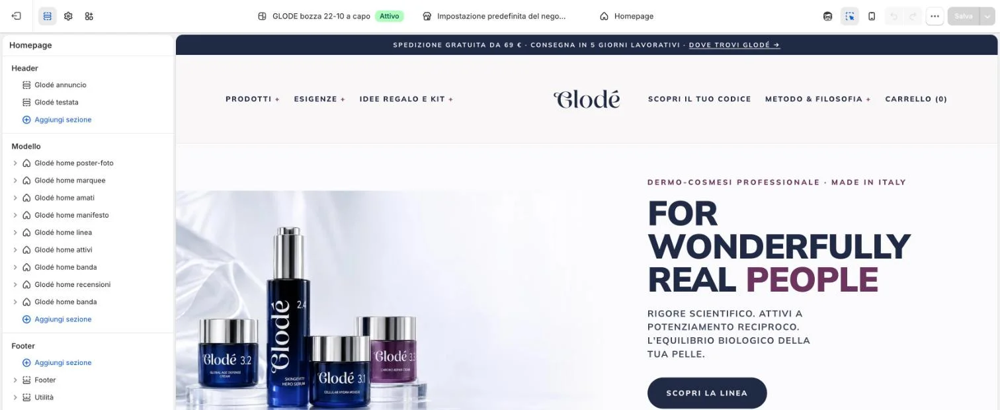
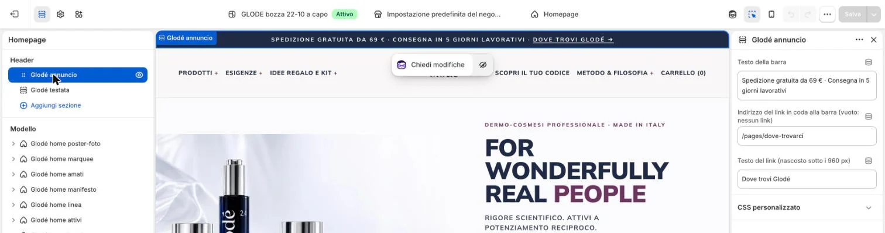

La barra blu sopra il menu («Spedizione gratuita da 69 € · …») si cambia da «Modifica tema». È il sito vero: quello che salvate si vede subito, per tutti.
Cliccate «Negozio online», poi «Modifica tema».
1
Nella colonna a sinistra, sotto «Header», cliccate «Glodé annuncio».

Non qui2Cosa non toccare qui?
«Aggiungi sezione», le sezioni sotto «Modello» (i pezzi della home), «Glodé testata» e le icone in alto a sinistra (impostazioni del tema, logo, colori): sono fatti dall’agenzia e cambiano il sito di tutti. Qui si cambiano solo la barra in alto e i testi del piede. Elenco completo in Cosa non toccare.
«Attivo» vicino al nome?
Vuol dire che state cambiando il tema pubblicato, cioè il sito che vedono le clienti.
Nella colonna a destra cambiate il testo in «Testo della barra».

Non qui3Cosa scrivere?
Una riga sola e corta: oggi è «Spedizione gratuita da 69 € · Consegna in 5 giorni lavorativi». I puntini in mezzo li scrivete voi, come testo.
E se cambia la soglia dei 69 €?
La cifra deve essere uguale alla spedizione gratuita vera del negozio. La stessa soglia è scritta anche nel tema (scheda prodotto, FAQ, condizioni): se cambia, scriveteci prima, così cambiamo tutto insieme.
«CSS personalizzato»?
Mai: è codice.
Per il link in coda alla barra, cambiate l’indirizzo e il testo nelle due caselle sotto.
4Come si scrive l’indirizzo?
Solo la parte dopo glode-lab.it, che comincia con /: per esempio /pages/dove-trovarci oppure /collections/sieri.
Con l’indirizzo vuoto il link sparisce. Il testo del link si vede solo da computer (sopra i 960 px): sul telefono la barra mostra solo il testo.
Cliccate «Salva» in alto a destra.
5«Salva» è grigio
Diventa cliccabile solo dopo una modifica.
Ho sbagliato prima di salvare
Usate le frecce accanto a «Salva» per annullare. Se avete già salvato, riscrivete il testo di prima e salvate di nuovo.
Scriveteci cosa avete cambiato.
Perché?
L’agenzia tiene una copia del tema per gli aggiornamenti: se non lo sappiamo, il prossimo aggiornamento rimette il testo vecchio.
Sul sito
La barra blu in cima a tutte le pagine, sopra il menu. Il link in fondo («Dove trovi Glodé →») si vede solo da computer.
 1
1